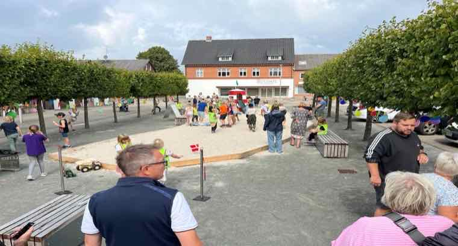
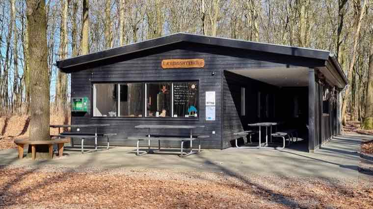
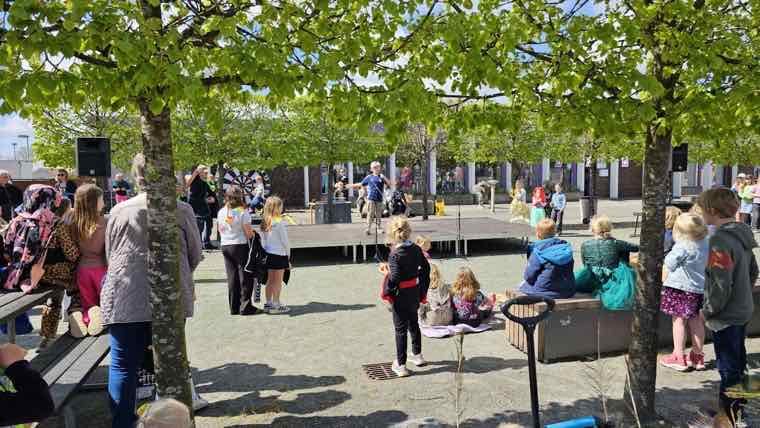
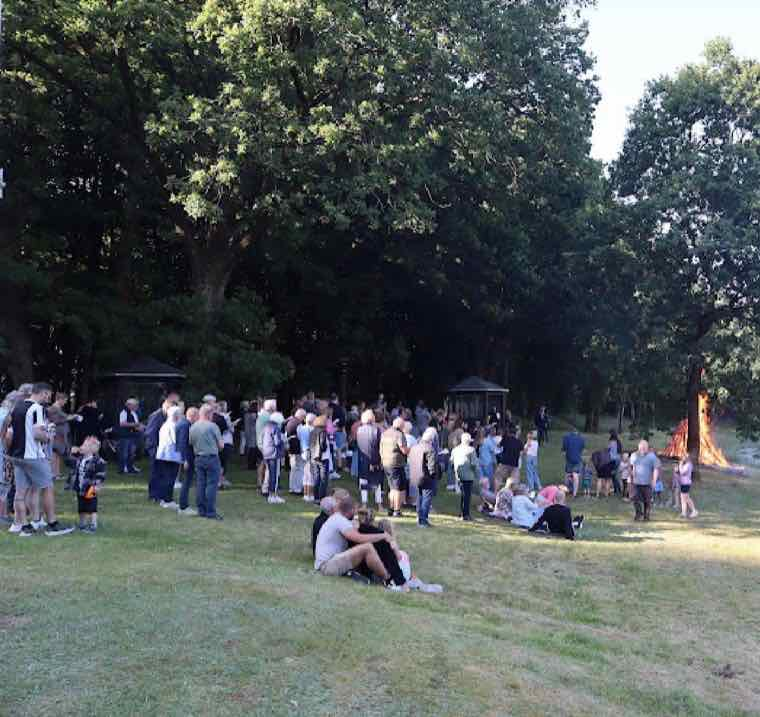
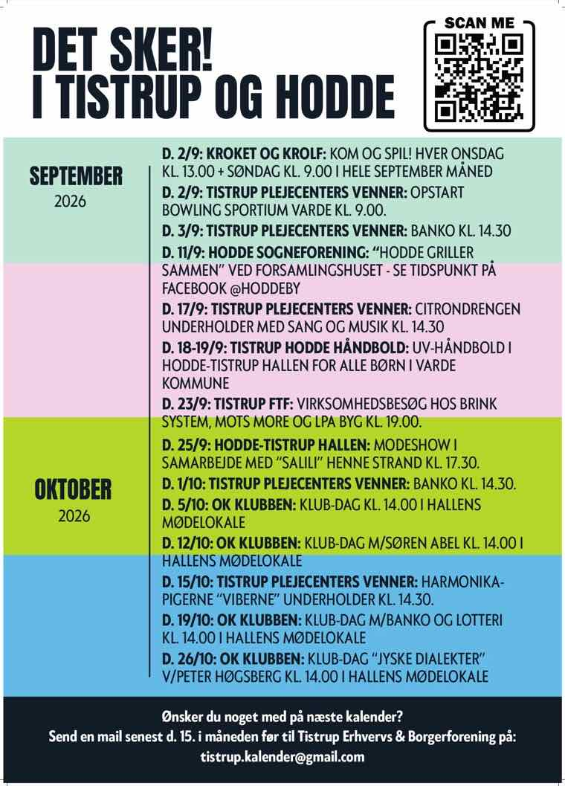
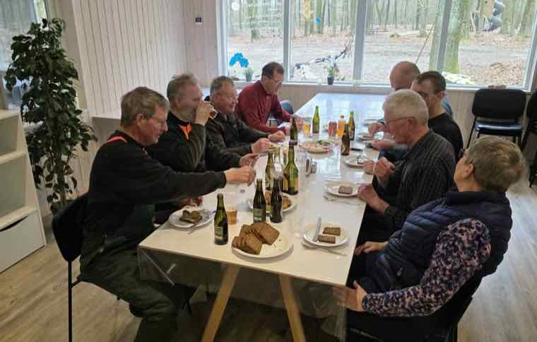

Det sker her.
Nyheder, foreninger og arrangementer i Tistrup og Hodde.
Nyheder Lokale medier

Tistrup NytByens egen nyhedsside for Tistrup og Hodde.tistrupnyt.dk ↗
Pulsen i VestHistorier og arrangementer fra Tistrup og egnen.pulsenivest.dk ↗
TistrupnewsLokale nyheder fra Tistrup og omegn.tistrupnews.dk ↗
VORES TistrupLokale historier fra 6862 Tistrup.vores-tistrup.dk ↗Fællesskaber og arrangementer Foreninger og kalender

Byens kalenderAlle arrangementer fra foreningerne. Her kan du også oprette dit eget.Se kalenderen → Foreninger i TistrupFind en forening, et hold eller et fællesskab.Se foreningerne →
Fællesskaber i VardeVarde Kommunes oversigt over fællesskaber i lokalsamfundene.vardekommune.dk ↗